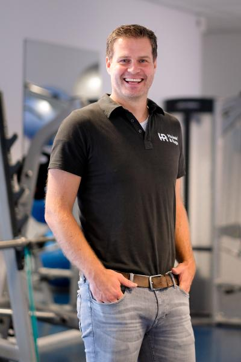
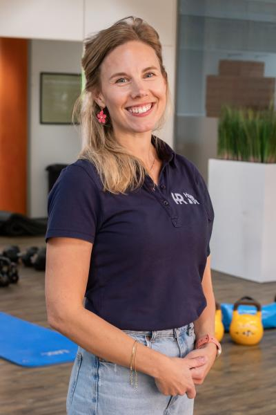
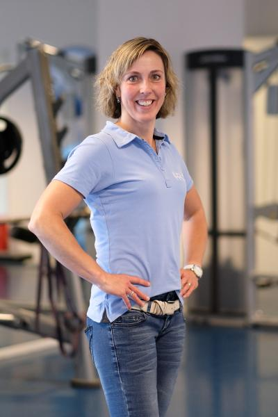
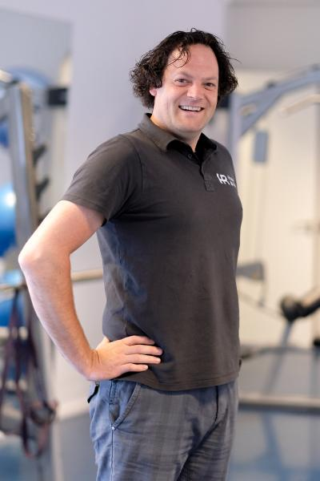
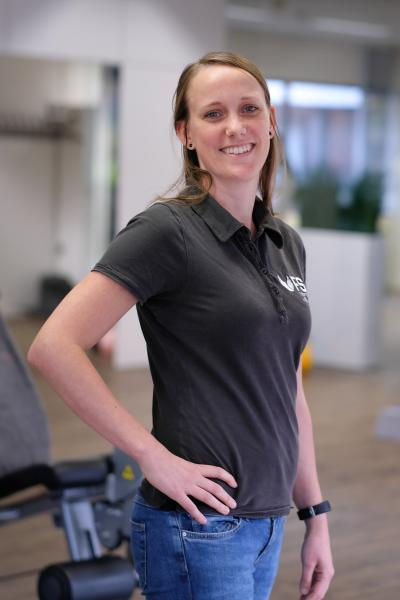
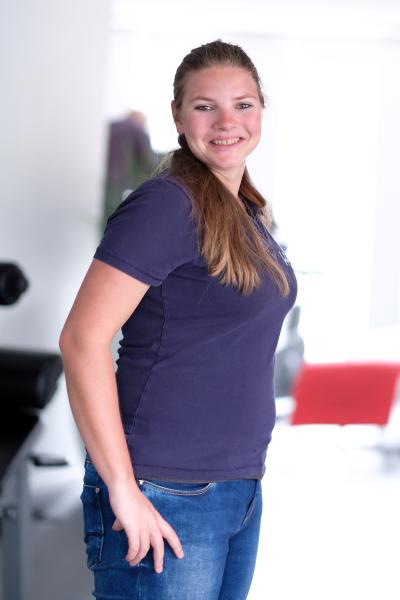

Locatie FSG Health, Laan van Westenenk 4, Apeldoorn
Weer bewegen zonder dat het pijn doet.
Wij zoeken samen met u de balans tussen wat u van uw lichaam vraagt en wat het aankan. Persoonlijk, vakkundig en met een team dat onderling veel overlegt.
Telefonisch bereikbaar maandag tot en met vrijdag, 8.00 tot 14.00 uur.

Maandag en woensdag open tot 21.00 uur
Ook na uw werk terecht.
Waar heeft u last van?
Grote kans dat wij uw klacht vaak zien. Dit behandelden de collega's van Houwer & Ruijs Apeldoorn in 2024.
Behandelingen
Van een sportblessure tot klachten door uw werk. Elke behandeling begint met uw hulpvraag; samen stellen we de doelen vast.
- Fysiotherapie
- Samen herstellen we de verstoorde balans tussen belasting en belastbaarheid.
- Sportfysiotherapie
- Voor wie een blessure heeft opgelopen tijdens het sporten, en weer verder wil.
- Arbeidsfysiotherapie
- Gericht op uw inzetbaarheid en vitaliteit in het werk.
- Handtherapie
- Gespecialiseerd in hand- en polsklachten.
- Kinderfysiotherapie
- Voor kinderen met klachten op het gebied van orthopedie, sport, revalidatie, ademhaling en (inspannings)incontinentie.
- Shockwave
- Extracorporeal ShockWave Therapy (ESWT): een beproefde methode tegen chronische pijn in spieren en pezen.
- Echografie
- Met een echo zien we beter wat er in de geblesseerde structuur aan de hand is.
- Dry needling
- Schakelt triggerpoints uit, die kenmerkend zijn voor pijn in de spieren.
- Sportmassage
- Betere doorbloeding, ontspannen spieren, afvoer van vocht en afvalstoffen en minder bewegingsbeperking.
Liever thuis oefenen tussen de afspraken door? Met de PhysiApp krijgt u uw oefenprogramma online mee.
Een team dat met elkaar overlegt
Als team fysiotherapeuten staan wij voor ons vak. Uw hulpvraag staat centraal. Therapeuten werken veel samen, en ook met huisartsen, praktijkondersteuners, verloskundigen, bedrijven en sportverenigingen in de regio.
Zo vindt u bij ons onder meer manueel therapeuten, sport-, kinder-, bekken- en handtherapeuten onder één dak.








25 jaar Houwer & Ruijs
Drie locaties in Apeldoorn
Wat patiënten zeggen
Google: 4 van de 5 sterren, 9 reviews
"Goed geholpen met een kruisband revalidatie. Zeer fijn en gemakkelijk contact en vakkundig personeel!"
"Ze zijn er erg vakkundig"
"Fijne praktijk"
"De praktijk denkt mee, de therapeut neemt de tijd. Alles ademt professionaliteit, ervaring en klantgerichtheid."
"Goed geluisterd naar de klachten en duidelijke uitleg en advies voor thuis oefeningen. En alle afspraken vonden plaats op het afgesproken tijdstip."
"De tomeloze energie die jullie allemaal uitstralen in de trainingszaal is echt fantastisch."
Wordt het vergoed?
Met een aanvullende verzekering wordt fysiotherapie of manuele therapie meestal geheel of gedeeltelijk vergoed. Wij hebben dit jaar met alle zorgverzekeraars een contract, dus de nota gaat dan rechtstreeks naar uw verzekeraar.
Hoeveel behandelingen u nog vergoed krijgt, mogen wij door de privacywet niet opvragen. Dat weet uw zorgverzekeraar.
Afspraak afzeggen kan tot 24 uur van tevoren.
Tarieven 2026
| Screening, intake en onderzoek | € 74,60 |
| Behandeling fysiotherapie | € 50,75 |
| Behandeling manuele therapie | € 64,50 |
| Behandeling kinderfysiotherapie | € 64,50 |
| Behandeling arbeidsfysiotherapie | € 64,50 |
| Intake en echografie | € 74,50 |
| E-consult, telefonisch of videobellen | € 30,40 |
| Niet nagekomen afspraak | € 38,00 |

Locatie FSG Health
Laan van Westenenk 47336 AZ Apeldoorn
In de buurt van Ugchelen
Openingstijden
| Maandag | 08.00 - 21.00 |
| Dinsdag | 08.00 - 18.00 |
| Woensdag | 08.00 - 21.00 |
| Donderdag | 08.00 - 20.00 |
| Vrijdag | 08.00 - 18.00 |
| Zaterdag en zondag | Gesloten |
Ook in Apeldoorn: Deventerstraat 120 en Gezondheidscentrum Welgelegen, Baron Sloetkade 109.
Afspraak maken
Bel de praktijk, of laat uw gegevens achter. We nemen binnen één werkdag contact met u op.
055 360 56 81Maandag tot en met vrijdag, 8.00 tot 14.00 uur